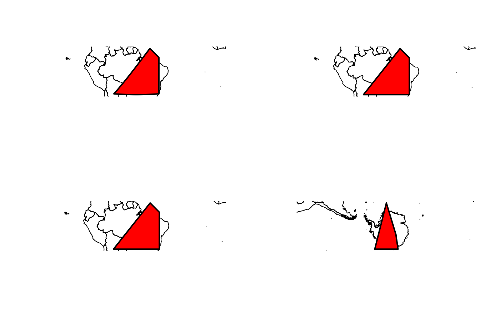

Compute extent of occurrences (EOO) for multiple taxa in square kilometers and provide polygons used for EOO computation
EOO.computing(
XY,
exclude.area = FALSE,
country_map = NULL,
export_shp = FALSE,
driver_shp = "ESRI Shapefile",
write_shp = FALSE,
alpha = 1,
buff.alpha = 0.1,
method.range = "convex.hull",
method.less.than3 = "not comp",
file.name = "EOO.results",
parallel = FALSE,
NbeCores = 2,
show_progress = TRUE,
proj_type = "cea",
mode = "spheroid"
)dataframe see Details
a logical, if TRUE, areas outside of country_map
are cropped of SpatialPolygons used for calculating EOO. By default
is FALSE
a SpatialPolygonsDataFrame or
SpatialPolygons showing for example countries or continent borders.
This shapefile will be used for cropping the SpatialPolygonsl if
exclude.area is TRUE
a logical, whether shapefiles should be exported or not, see Value. By default is FALSE
a string, define the driver for exporting shapefiles,
by default "ESRI Shapefile". See sf::st_write()
a logical, if TRUE, export SpatialPolygons used for
EOO computation as ESRI shapefiles in the working directory. By default is
FALSE
a numeric, if method.range is "alpha.hull", value of
alpha of the alpha hull, see alphahull::ahull(). By default is 1
a numeric, if method.range is "alpha.hull", define
the buffer in decimal degree added to alpha hull. By default is 0.1
a character string, "convex.hull" or "alpha.hull". By default is "convex.hull"
a character string. If equal to "arbitrary", will give a value to species with two unique occurrences, see Details. By default is "not comp"
a character string. Name file for exported results in csv file. By default is "EOO.results"
a logical. Whether running should be performed in parallel. FALSE by default.
an integer. Register the number of cores for parallel execution. Two by default.
logical. Whether progress informations should displayed. TRUE by default
string or numeric
character string either 'spheroid' or 'planar'. By default 'spheroid'
If export_shp is FALSE, a dataframe with one field
containing EOO in square kilometers. NA is given when EOO could not
be computed because there is less than three unique occurrences (or two if
method.less.than3 is put to "arbitrary").
If export_shp is TRUE, a list with:
results a data.frame
spatial used for EOO computation
Input as a dataframe should have the following structure:
It is mandatory to respect field positions, but field names do not matter
| 1 | ddlat | numeric, latitude (in decimal degrees) |
| 2 | ddlon | numeric, longitude (in decimal degrees) |
| 3 | tax | character or factor, taxa names |
If exclude.area is TRUE and country_map is not provided,
the world country polygons used comes from the package rnaturalearth
By default (mode = "spheroid"), the area of the polygon is based on a
polygon in longitude/latitude coordinates considering the earth as an
ellipsoid.
To make a polygon more accurate, the function use the function st_segmentize
from the sf package.
This adds vertices on the great circles (in order to make shortest distances
between points, see example below) which can make difference for species with
large distribution.
An estimation of EOO based on projected data is also possible (mode = "planar").
This allow the user to use its own projection.
By default, the projection (proj_type = "cea") is a global cylindrical equal-area projection.
It can makes sense to use a planar projection to estimate the EOO. See example.
Important notes:
EOO will only be computed if there is at least three unique occurrences
unless method.less.than3 is put to "arbitrary". In that specific
case, EOO for species with two unique occurrences will be equal to
DistDist0.1 where Dist is the distance in kilometers separating the two
points.
For the very specific (and infrequent) case where all occurrences are localized on a straight line (in which case EOO would be null), 'noises' are added to coordinates, using the function jitter. There is a warning when this happens. This means that EOO value will not be constant across multiple estimation (although the variation should be small)
Limitation
For a species whose occurrences span more than 180 degrees, EOO should not be considered. This is the case for example for species whose distribution span the 180th meridian.
Gaston & Fuller 2009 The sizes of species' geographic ranges, Journal of Applied Ecology, 49 1-9
set.seed(2)
dataset <- dummy_dist(nsp = 3, max_occ = 30)
EOO.computing(XY = dataset, export_shp = TRUE)
#>
|
| | 0%
|
|======================= | 33%
#> Linking to GEOS 3.14.1, GDAL 3.12.1, PROJ 9.7.1; sf_use_s2() is TRUE
#>
|
|=============================================== | 67%
|
|======================================================================| 100%
#> $results
#> tax eoo issue_eoo
#> 1 tax1 188282 NA
#> 2 tax2 192154 NA
#> 3 tax3 233350 NA
#>
#> $spatial
#> Simple feature collection with 3 features and 1 field
#> Geometry type: POLYGON
#> Dimension: XY
#> Bounding box: xmin: 0 ymin: 0.1 xmax: 5 ymax: 4.8
#> Geodetic CRS: WGS 84
#> tax geometry
#> 1 tax1 POLYGON ((4.975033 1.725003...
#> 2 tax2 POLYGON ((4.612482 1.256251...
#> 3 tax3 POLYGON ((4.624979 1.687503...
#>
EOO.computing(XY = dataset, mode = "planar")
#>
|
| | 0%
|
|======================= | 33%
|
|=============================================== | 67%
|
|======================================================================| 100%
#> tax eoo issue_eoo
#> 1 tax1 187384 NA
#> 2 tax2 191262 NA
#> 3 tax3 232299 NA
EOO.computing(XY = dataset, method.range = "alpha")
#>
|
| | 0%
|
|======================= | 33%
|
|=============================================== | 67%
|
|======================================================================| 100%
#> tax eoo issue_eoo
#> 1 tax1 3037.4 NA
#> 2 tax2 42740.0 NA
#> 3 tax3 220645.0 NA
res <- EOO.computing(XY = dataset, export_shp = TRUE)
#>
|
| | 0%
|
|======================= | 33%
|
|=============================================== | 67%
|
|======================================================================| 100%
res$spatial
#> Simple feature collection with 3 features and 1 field
#> Geometry type: POLYGON
#> Dimension: XY
#> Bounding box: xmin: 0 ymin: 0.1 xmax: 5 ymax: 4.8
#> Geodetic CRS: WGS 84
#> tax geometry
#> 1 tax1 POLYGON ((4.975033 1.725003...
#> 2 tax2 POLYGON ((4.612482 1.256251...
#> 3 tax3 POLYGON ((4.624979 1.687503...
country_map <-
rnaturalearth::ne_countries(scale = 50, returnclass = "sf", type = "map_units")
### example Large distribution
# Spheroid estimation
par(mfrow = c(2,2))
XY <-
data.frame(x = c(-20, 5, 0, -20, -20),
y = c(-65, -45, -40, -55, -40),
taxa = "species")
p1 <-
EOO.computing(XY = XY, export_shp = TRUE)
#>
|
| | 0%
|
|======================================================================| 100%
p1$results
#> tax eoo issue_eoo
#> 1 species 4384976 NA
plot(st_geometry(country_map), extent = p1$spatial)
plot(p1$spatial, lwd = 2, col = "red", add= TRUE)
p2 <-
EOO.computing(XY = XY, mode = "planar", export_shp = TRUE)
#>
|
| | 0%
|
|======================================================================| 100%
p2$results
#> tax eoo issue_eoo
#> 1 species 4388443 NA
plot(st_geometry(country_map), extent = p2$spatial)
plot(p2$spatial, lwd = 2, col = "red", add= TRUE)
# World Mercartor projection
p2 <-
EOO.computing(XY = XY, mode = "planar", proj_type = 3395, export_shp = TRUE)
#>
|
| | 0%
|
|======================================================================| 100%
p2$results
#> tax eoo issue_eoo
#> 1 species 4541407 NA
plot(st_geometry(country_map), extent = p2$spatial)
plot(p2$spatial, lwd = 2, col = "red", add= TRUE)
### example Antartic distribution
XY <-
data.frame(x = c(-65, -62, -78, -65),
y = c(-150, 0, 120, 150),
taxa = "species")
## This throws an error
# p1 <-
# EOO.computing(XY = XY, mode = "planar", export_shp = TRUE)
p1 <-
EOO.computing(XY = XY, mode = "planar", proj_type = "Antarctic", export_shp = TRUE)
#>
|
| | 0%
|
|======================================================================| 100%
p1 <- st_transform(p1$spatial, proj_crs(proj_type = "Antarctic"))
plot(st_geometry(st_transform(country_map, proj_crs(proj_type = "Antarctic"))),
extent = p1)
plot(p1, lwd = 2, col = 'red', add = TRUE)

## Parallel computation becomes advantageous for very large dataset
# library(microbenchmark)
# microbenchmark(EOO.computing(XY = dummy_dist(nsp = 1000, seed = 1)),
# EOO.computing(XY = dummy_dist(nsp = 1000, seed = 1), parallel = T, NbeCores = 4), times = 2)